Unix is a user-friendly. It’s just selective about who its friends are.
Unix哲学
KISS：Keep it simple,stupid.
Everything is a file and pipeline programs to work together.
每个工具只做一件事情，但做到极致
小工具统一文本输入输出，易于使用
使用管道进行组合
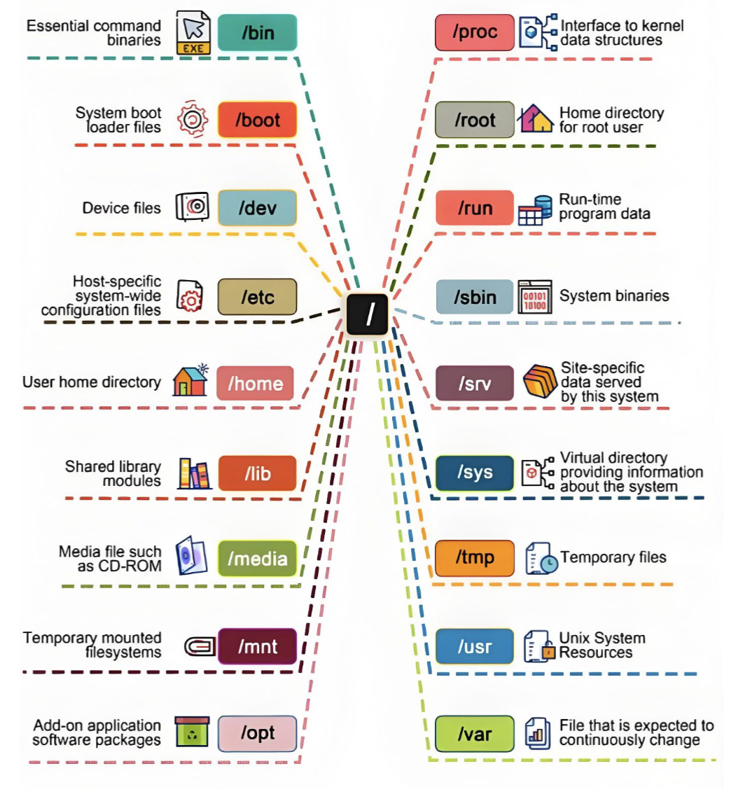
man -k xxx 检索关键字XXX的命令
echo $?查看上一条指令的退出状态
gcc -E -S -c -o
.c -> .i -> .s -> .o -> .out
元编程：定义自己的语言，但是不破坏可读性
函数的调用就是栈的生长
.o -> .out就是重定向的过程，.o不知道所调用函数位置，链接后填入函数地址会有偏移
C程序执行的两个视角
- 静态：C 代码的连续一段总能对应到一段连续的机器指令
- 动态：C 代码执行的状态总能对应到机器的状态
Segmentation fault报错：已超过这块内存允许的权限来操作
大多数机器采用小端，容易对齐
long在32位上是4个字节，在64位是8个字节
只要是个指针，32位机就是4个字节，64位就是8个字节，指针在内存中的存储是个地址
void (*signal (int sig, void (*func)(int)))(int);
参数为(int sig, void (*func)(int)),*函数返回值，为int型
拿到项目后
make构建
make run跑一下
看看Makefile怎么构建的
大致了解下项目总体结构
- tree
- find … | xargs cat | wc –l
将find找到的文件列表传给cat，cat依次读取文件内容，wc -l统计所有文件的总行数
find . -name "*.c" -o -name "*.h" | xargs cat | wc -l
266807
找到入口点main
grep -n main $(find . -name "*.c")
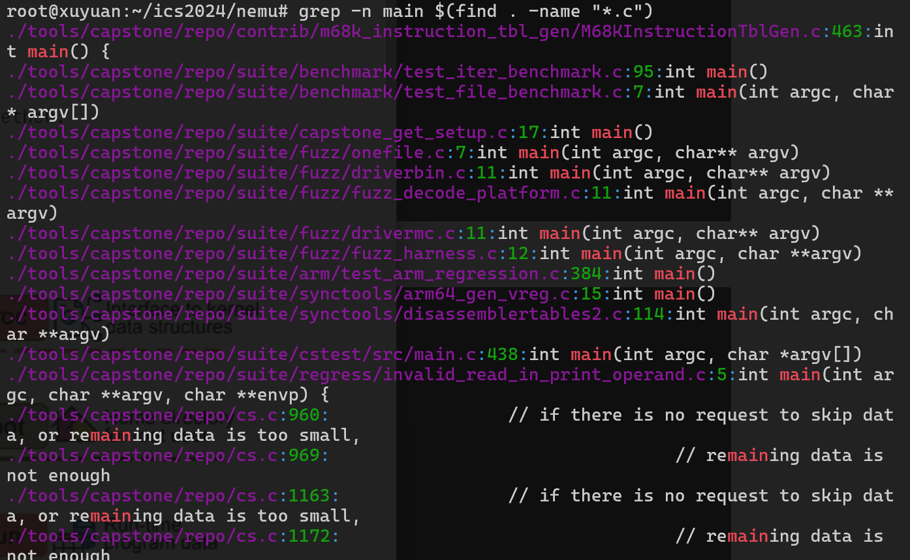
grep -nr "\bmain\b" nemu/src
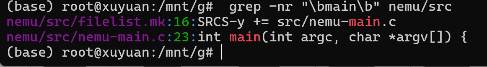
正则表达式，main以单词形式出现
vim $(fzf)可以以树的方式直接跳转某个文件
(gdb)layout src :打开源码
两种运行方式
- make run
- ./build/riscv32-nemu-interpreter
怎么给nemu传指令
- echo ‘help’ | ./build/riscv32-nemu-interpreter
- cat in.txt | ./build/riscv32-nemu-interpreter
- ./build/riscv32-nemu-interpreter < in.txt
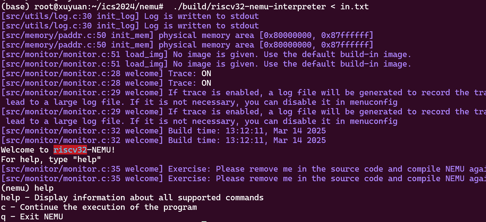
回归测试的脚本？
parse_args()函数，解析命令行参数
static int parse_args(int argc, char *argv[]) {
const struct option table[] = {
{"batch" , no_argument , NULL, 'b'},
{"log" , required_argument, NULL, 'l'},
{"diff" , required_argument, NULL, 'd'},
{"port" , required_argument, NULL, 'p'},
{"help" , no_argument , NULL, 'h'},
{0 , 0 , NULL, 0 },
};
int o;
static
如果在两个文件里定义了重名的函数，能够分别百衲衣，但链接会出错，加了一个static，约束可见的范围，使不会触发函数得重名，nemu框架得逻辑：只要是函数就加static
/riscv32/**/reg.h
#ifndef __RISCV_REG_H__
#define __RISCV_REG_H__
#include <common.h>
static inline int check_reg_idx(int idx) {
IFDEF(CONFIG_RT_CHECK, assert(idx >= 0 && idx < MUXDEF(CONFIG_RVE, 16, 32)));
return idx;
}
#define gpr(idx) (cpu.gpr[check_reg_idx(idx)])
static inline const char* reg_name(int idx) {
extern const char* regs[];
return regs[check_reg_idx(idx)];
}
#endif
运行时间短，但是调用频繁，static inline int建议编译器用内联函数的方式展开，不调用函数，而是在调用点直接展开，以空间换时间
monitor.c
void init_monitor(int argc, char *argv[]) {
/* Perform some global initialization. */
/* Parse arguments. */
parse_args(argc, argv);
/* Set random seed. */
init_rand();
/* Open the log file. */
init_log(log_file);
/* Initialize memory. */
init_mem();
/* Initialize devices. */
IFDEF(CONFIG_DEVICE, init_device());
/* Perform ISA dependent initialization. */
init_isa();
/* Load the image to memory. This will overwrite the built-in image. */
long img_size = load_img();
/* Initialize differential testing. */
init_difftest(diff_so_file, img_size, difftest_port);
/* Initialize the simple debugger. */
init_sdb();
IFDEF(CONFIG_ITRACE, init_disasm());
/* Display welcome message. */
welcome();
}
人机交互，以默认行缓冲的方式交互，没有换行符是不会进行I/O交互，每读到一个换行符\n，就会释放缓冲区
**/debug.h
#include <common.h>
#include <stdio.h>
#include <utils.h>
#define Log(format, ...) \
_Log(ANSI_FMT("[%s:%d %s] " format, ANSI_FG_BLUE) "\n", \
__FILE__, __LINE__, __func__, ## __VA_ARGS__)
#define Assert(cond, format, ...) \
do { \
if (!(cond)) { \
MUXDEF(CONFIG_TARGET_AM, printf(ANSI_FMT(format, ANSI_FG_RED) "\n", ## __VA_ARGS__), \
(fflush(stdout), fprintf(stderr, ANSI_FMT(format, ANSI_FG_RED) "\n", ## __VA_ARGS__))); \
IFNDEF(CONFIG_TARGET_AM, extern FILE* log_fp; fflush(log_fp)); \
extern void assert_fail_msg(); \
assert_fail_msg(); \
assert(cond); \
} \
} while (0)
#define panic(format, ...) Assert(0, format, ## __VA_ARGS__)
#define TODO() panic("please implement me")
#endif
#define assert(cond) if(!(cond)) panic(….);
宏的展开可能会打乱计算的优先级顺序，使用do{}while(0)是为了防止宏展开打破。
Kconfig管理配置宏
数据的机器级表述
如何取字节？
如x=0101，要把右边第二位取出来，(x»1)&1
再如
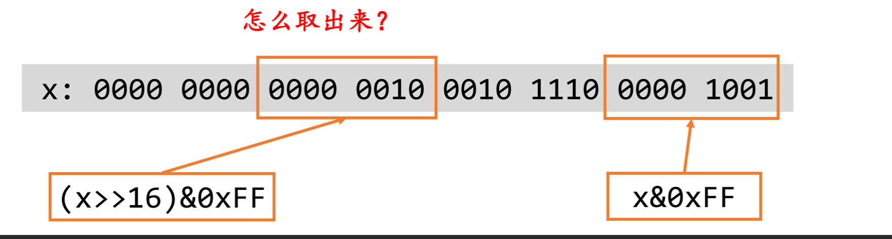
(x»16)&11111111
就是丢掉不用的位
交换高/低16位((x & 0xFFFF)«16)，((x»16)&0xFFFF)
测试𝑥 ∈ 𝑆，(S » x) & 1
求 𝑆! = 𝑆 ∪ {𝑥}，S | (1 « x)
求|S|，S二进制表示有多少个1
单指令多数据
&，|，~对于整数里的每一个bit来说是独立（并行）的
Bit Set
任意位，位运算是对所有bit同时完成的，省空间，程序执行中，内存优先级不同，速度不同，对cache的占用比较小
补码：各位取反末尾加一
Undefined Behaviour
警惕整数溢出
移位操作不能超出数据长度
如果有UB行为，用不同gcc优化行为，输出是不确定的
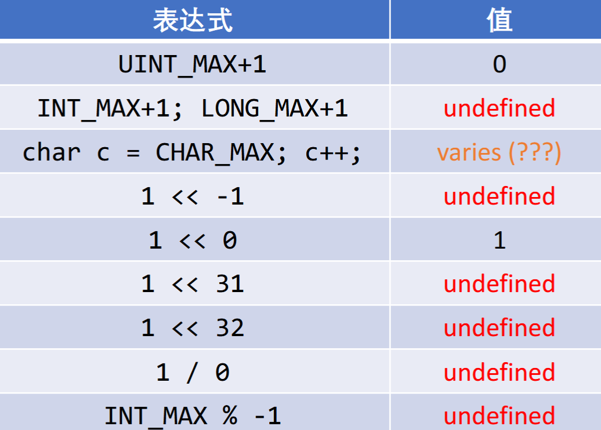
如果在试图访问一块内存时，访问到这块内存之外的一块内存，比如数组越界，但是还是在栈上，可能是页的边界读到了值
编译器优化 -fsanitize
如何实现在每一次指针访问时，都增加一个断言assert(obj->low <= ptr && ptr < obj->high);
gcc –fsanitize=undefined a.c && ./a.out
ABI和内联汇编
机器字长式处理器能够直接进行整数或者位运算大小，代表一个指针最多多少位
现在处理器一般实现48bit物理地址
晶体管是以数字逻辑电路形式，logic units组成计算单元，….，包含在ALU中，汇编器如何翻译，硬件如何解读01串，要遵循ISA协议
QA：只要有ISA协议真的足够了吗？
需要ABI
约定binary的行为
- 二进制文件的格式
- 函数调用，系统调用，如printf需要借助外部的库函数，如libc
- 链接，加载
cdecl函数调用
caller stack frame
- 所有参数都以数组的形式保存在堆栈上，例子，反序压栈，f(x,y)，y,x,f从高地址到低地址
- 返回地址
- 跳转到callee
调用方寄存器%eax,%ebx,%ecd,被调用方寄存器%edi，先存下来，函数退出时要恢复调用前的值，调用方负责反序压栈，被调用方负责执行就行
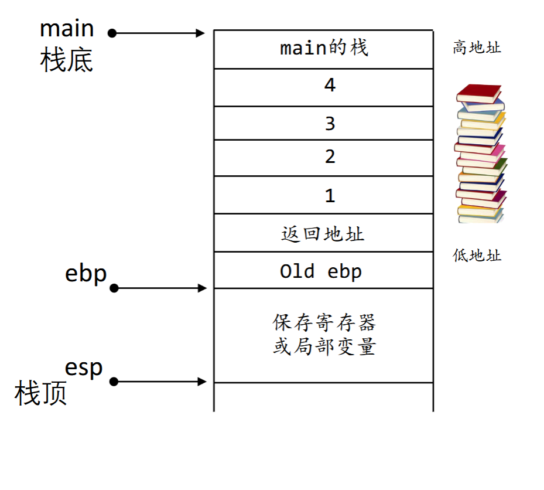
OS，栈，……，堆，data，代码，
PC指向代码块
在X86上，寄存器数量有限，基于栈传参
使用寄存器传递参数：rdi,rsi,rdx,rcx,r8,r9
- callee可以随意修改这6个寄存器的值
- 编译器有了更大的调度空间
交换两个指针指向的数字
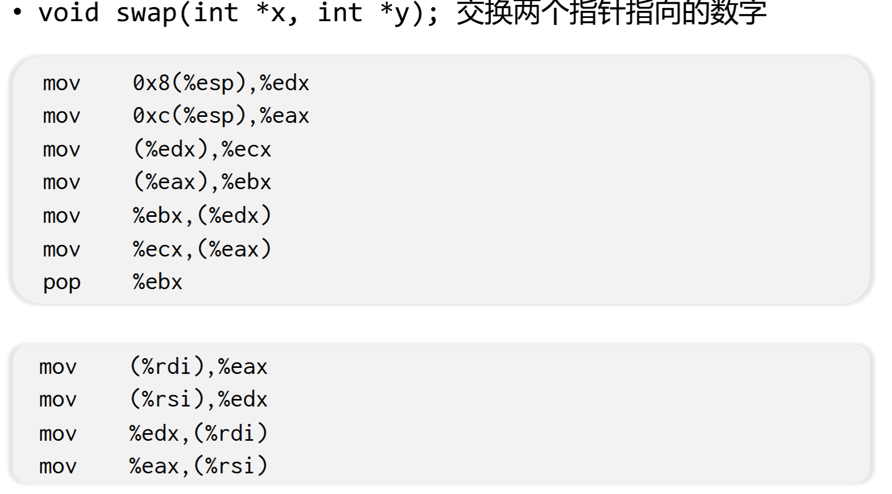
I/O设备
设备=一组寄存器，每次可以交换一定数量的数据
设备-处理器接口
CPU通过PMIO.PIO访问
Port-mapped I/O (PMIO) //很老的做法
CPU和内存地址分离？
• I/O地址空间（port） • CPU直连I/O总线

Memory-mapped I/O(MMIO)
- 直观:使用普通内存读写指令
- 带来一些设计和实现的麻烦，编译器优化，乱序执行
- 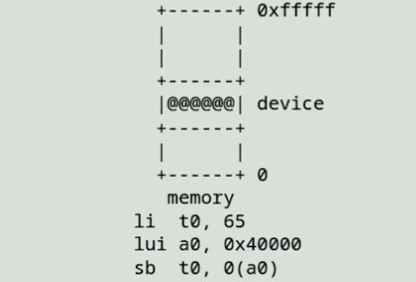
80s如何打印？
不是发送数据，而是执行指令
两个特殊的I/O设备
总线
- PCI总线协议
- CPU连接总线
- 总线连接其他总线
中断控制器
-
中断设计是为了弥补I/O设备的速度缺陷
-
管理多个产生中断的设备
-
汇总成一个中断信号给CPU
-
支持中断的屏蔽，优先级管理等
-
中断=硬件驱动的函数调用，相当于在每条语句后都插入intterrupt_handler();
栈和堆之间的空闲区域做文件映射，l.bc.so,map系统调用映射同步
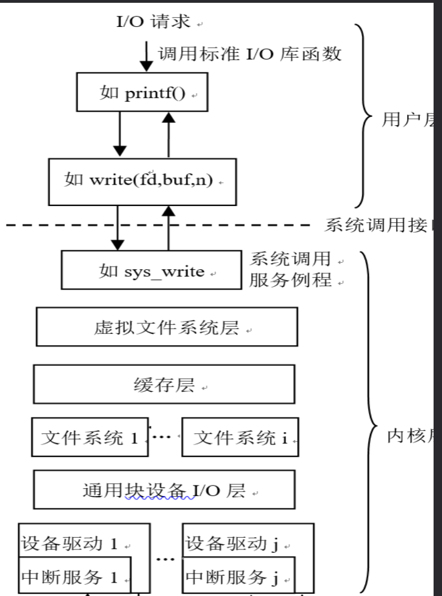
中断，从用户态切换到内核态，同一个CPU上可以做不同任务，多线程
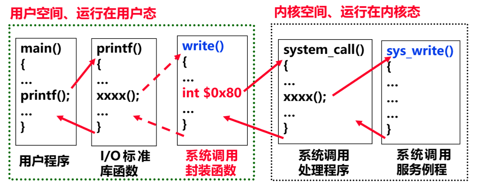
进程=分时多线程+虚拟存储
链接与加载
0001 0100 jmp 0100 ;如果发生偏移怎么办？
0001 0000 jmp foo;借助符号表跳转，模块化好
复习一下ELF文件？
可重定位目标文件 • ELF 头 定义了ELF魔数、版本、小端/大端、操作系统平台、目标文件的类型、机器结构类型、节头表的起始位置和长度等 • .text 节 编译汇编后的代码部分 • .rodata 节 只读数据，如 printf 格式串、switch 跳转表等 • .data 节 已初始化且初值不为0的全局/静态变量 • .bss 节 未初始化或初值为0的全局/静态变量，仅是占位符，不占任何实际磁盘空间。区分bss节是为了空间效率
QA:为什么bss节不占任何实际磁盘空间？
只有在运行的时候才会在栈上分配空间去用，不被其他外部文件所访问
QA：为什么要把程序和指令分开放？
- 指令cache可执行不可读不可写，数据cache可读/可写
- 数据会很多次覆盖，但是指令不会被反复覆盖，下次再次缓存命中，不会因为数据覆盖而指令cache清空
符号解析和重定位 • 确定标号引用关系 • 如何填空？
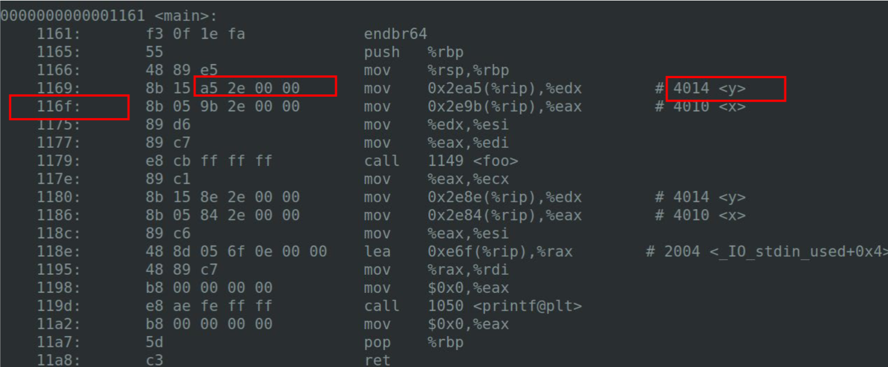
因为小端法，y的地址0x2ea5+116f
static链接
- 按照相同文件把三个locatable文件组合，外部符号
QA：能否直接用ld链接，如ld a.o b.o?
不行，没有链接标准库，找不到_start,main等函数
跑一个.out文件？
分配一个进程内存，可执行文件与虚拟地址空间间的存储器映像由ABI规范定义
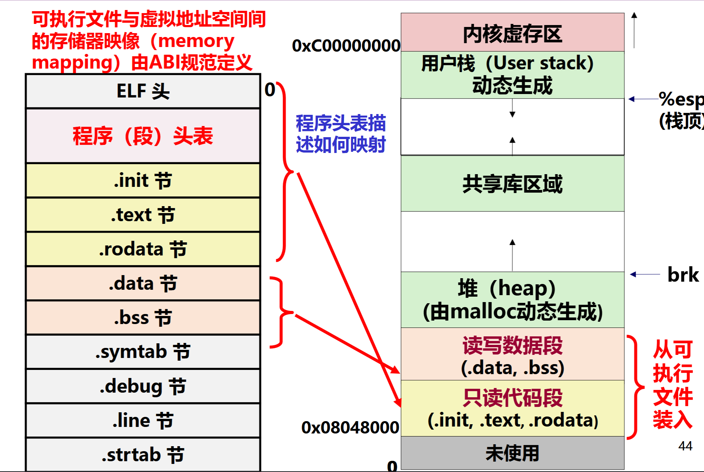
为什么要动态链接？去掉-fno-pic和static
占用空间更小
只用维护表就行
- GOT表
call *table[PRINTF]
- 延迟绑定使用PLT表有什么好处？
只有调用到的函数，才去回填跳转
printf@plt:
jmp *table[PRINTF]
push $PRINTF
call resolve
中断与分时多任务
QA：while(1);是否会把电脑卡死？
类似于call指令？发生中断处理，再返回ret
中断处理
- 自动保存RIP,CS,RFLAGS,RSP,SS,Error Code
- 根据中断/异常好跳转到处理程序，特权级切换回触发堆栈切换
int $0x80可以产生128号异常，主动唤起中断
时钟，键盘32号中断（IDT）
CLI:Clear Interrupt Flag 关中断，不是给低权限用的，
系统调用，打断点，int指令都是程序内部引发异常
一类是可处理，最终还得回到中断发生处next PC，保存现场，恢复现场（分时多任务，时钟中断都是这种）
而不可恢复的，程序出错，触发ERROR CODE0
QA:保存现场，恢复现场 什么值？
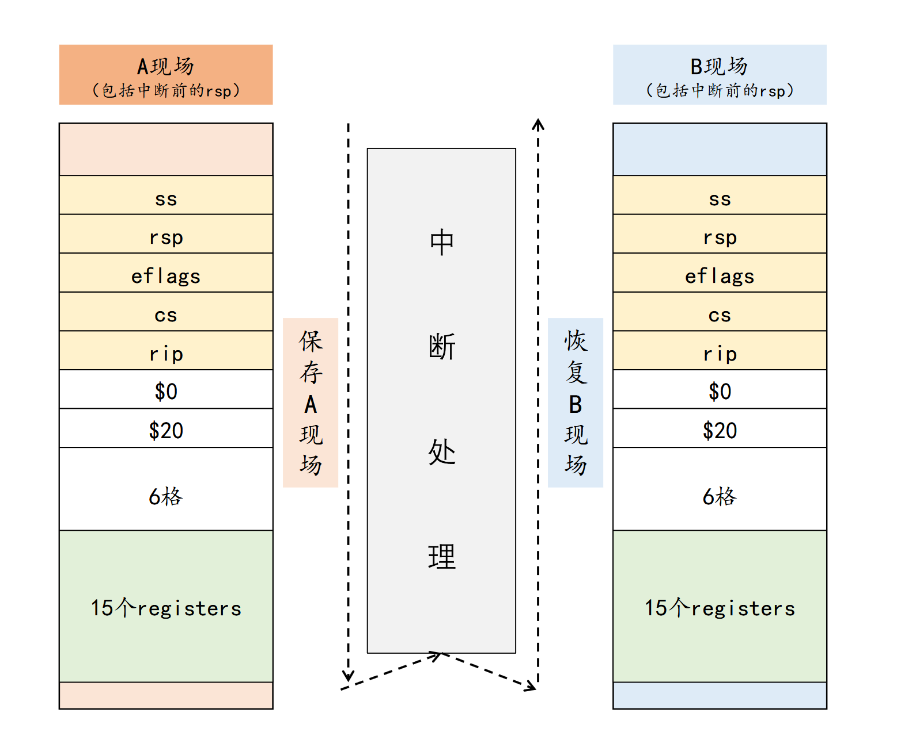